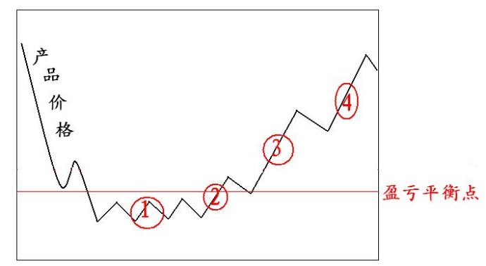
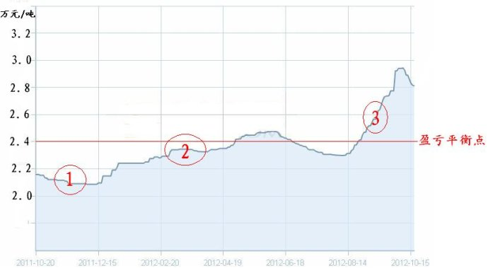
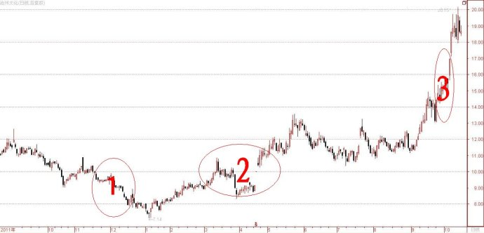

第265篇•由沧州大化谈怎样挖掘周期型牛股（2）
谷为陵
周期股的最大特点，是其主营产品价格呈现周期性变化，而随着产品价格的暴涨暴跌，其股价也是大起大落。根据周期性产品价格的变化规律，可以大致确定周期股一般有4个买点，如下图所示：

买点①：是在产品价格跌破了盈亏平衡点后，但还没有出现反弹的时候。这是产品价格的最低价区间，周期股也处于亏损状态，其股价也会跌得面目全非，按理说，这应该是挖掘周期股的最佳时机。但对于普通投资者来说，买点①还是有一定的不确定性，具有一定风险。这是因为，周期性产品在跌破了盈亏平衡点后，虽然知道价格迟早会反弹，但却难以确定何时会出现反弹，假若产品价格迟迟不反弹，总是在底部徘徊，那么，即使抄到周期股的底，股价也一时半会涨不起来。
买点②：是在产品价格出现了第一波小反弹，且回升到了盈亏平衡点之上。在这个时候，周期股将会扭转为盈，股价也会出现见底回升，但不会出现大涨。但应该注意的是，在这个时候，已经出现了产品价格下跌趋势的一个的小小的转向，新的上涨趋势能否持续，就是决定股价能否继续上涨的直接原因。投资者可以在买点②不买进，但却应该将买点②作为一个重要信号，以此盯住产品价格的后续变化。
买点③：产品价格继续上涨，周期股的业绩暴涨，股价飙升，形成一轮主升浪。
买点④：假若产品价格还能继续上涨，那么，该周期股将会成为绩优股或者绩优成长股，股价还会有一轮（也许是最后的一轮）上涨行情。
以上所谈可能有点抽象，为了便于理解，我就继续谈一下沧州大化的案例。
下面是沧州大化的主营产品TDI一年来的价格走势图：

TDI在2011年12月初跌到了最低的约每吨2.1万元，如图中红①所示，该价格跌破了行业的盈亏平衡点。其后，TDI价格出现一波回升，至今年6月涨到了每吨2.4～2.5万元，升破了盈亏平衡点，如图中红②所示。自今年8月中旬至10月初，TDI价格又出现一波大涨，涨到了每吨2.9万元，国庆节后价格稍有回落。
我们再来看看沧州大化的股价走势，下面是沧州大化一年来的股价走势日K线图：

可以看出，沧州大化的股价走势与TDI价格走势惊人一致。
首先，在去年12月TDI价格跌到最低点的时候，沧州大化的股价也跌到了最低区域。应该注意的是，TDI价格在去年12月15日左右止跌后，沧州大化的股价还在继续下跌，直到今年1月初才见底。这说明沧州大化股价相对于TDI价格有些滞后。这段走势如上图红①所示。
其次，当TDI价格自去年12月中至今年6月出现了第一波反弹时，沧州大化股价几乎是完美地复制了TDI价格的走势，其节奏几乎相同，这段走势如上图红②所示。在今年6月下旬至8月中旬，TDI价格出现了回调，期间沧州大化股价也是出现同步调整。
第三，当TDI价格自今年8月中旬至10月初出现一波大涨时，沧州大化股价也是亦步亦趋地跟随大涨，但这次沧州大化股价出现了一波主升浪。这段走势如上图红③所示。但若仔细观察，可以发现沧州大化股价的这轮上涨是从9月6日开始的，要比TDI价格晚启动半个月，股价走势又一次滞后于价格走势。
我在上篇博文中曾说过，假若TDI价格今后还能够继续上涨，比如上涨到每吨3.2至3.3万元以上，那么，沧州大化的股价也会继续上涨，从而出现一个买点④。
综上所述，挖掘周期型牛股的一个重要的方法，就是要注意跟踪周期性产品的价格在出现第一波小反弹，且经过短暂的调整后，其后有无继续大涨的可能性，假若产品价格能够继续大涨，那么，就很有可能催生相关周期股的一波主升浪。由于在弱市下，周期股的股价启动往往要滞后于产品价格启动约半个月时间，这段时间就是挖掘、发现、抓住周期型牛股的最佳时机。